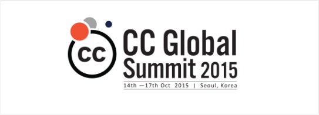

"Hello! Sharing world"
WORLD CHAMPIONS
FIFA CONFERENCE

The Global Summit brings together the community of experts, academics, and activists who comprise the Creative Commons affiliate network in a different country every two years. This year, we hope to expand our invitation list including organizations and individuals.
The Global Summit brings together the community of experts, academics, and activists who comprise the Creative Commons affiliate network in a different country every two years. This year, we hope to expand our invitation list including organizations and individuals who want to work with us on shared projects that advance the cause of the Commons, free culture and open knowledge. So if you're active and engaged in the worlds of open content and knowledge - free software advocates, wikipedians, Open knowledge, galleries, libraries, museums, archives, governments and foundations, lawyers, and activists - we hope you'll consider joining us this year to build a stronger, more vibrant commons together
Please contact us per Email for nay further questions about CC Global Summit 2015!
ccsummit2015@cckorea.org
Creative Commons
Global Summit 2015 Logo
The logo of CC Global Summit 2015 was decided through the logo competition from 8, June to 7, July.
The logo of CC Global Summit 2015 was decided through the logo competition from 8, June to 7, July. After online public voting and Selection Committee’s judging process, the logo from Naresh Agrawal won the prize. After consultation with Mr. Agrawal, we optimized the prize-winning-logo for this year’s summit as follows:
See the past CC Global Summits
Take a look at the past two CC Global Summits which took place in Buenos Aires and in Warsaw


Partner